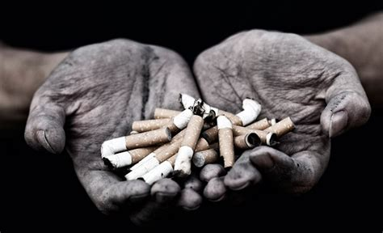

<div class="container mt-4 mb-5">
    <div class="card mb-3">
      
      <div class="card-body">
        <h5 class="card-title">Struggling with Withdrawal?</h5>
        <p class="card-text">
            Nicotine withdrawal is a big problem that affects many smokers who are trying to quit. In this article we will give you some ideas of how to tackle that itch to smoke, and - maybe - get rid of it for good. The rest of this article is about exactly that. How to not feel so bad from withdrawal. It is not fun to experience withdrawal, so this article is telling you all about how to experience the struggle a little less. What a good article this is.
        </p>
        <p class="card-text"><small class="text-muted">Tags: Health, quitting, tips & withdrawal.</small></p>
          
        <a href="#" class="card-link showmore-com">
            <i class="fas fa-star"></i>
            Favourite
        </a>
        <a href="#" class="card-link showmore-com">
            <i class="fas fa-share"></i>
            Share
        </a>
      </div>
    </div>
</div>